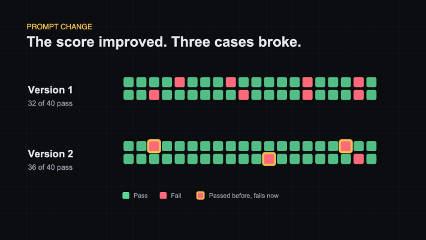

Your AI App Did Not Crash. It Quietly Got Worse.
You changed the prompt.
The answers look shorter. The tone feels better. Five examples worked.
So you ship it.
Two days later, support finds a problem. The new prompt fixed long answers, but it also removed an important refund warning in some cases.
Nothing crashed. No exception was raised. Every request returned a valid response.
The product simply became a little worse.
That is the uncomfortable thing about AI applications. Most regressions are quiet.
Normal tests are not enough
Traditional software is predictable.
Give a function the same input and you expect the same output. A unit test can compare the result with an exact value.
AI systems behave differently. The same question can produce two different answers. Both may be acceptable. One may also be subtly wrong.
That changes the question.
Instead of asking, "Does this pass?" you often need to ask, "How often does this pass?"
That is what an eval gives you.
An eval runs a set of realistic inputs through your AI system, checks the outputs against a clear definition of good, and reports the result as a score.
For example:
- Version 1 passes 32 of 40 support questions.
- Version 2 passes 36 of 40.
- Version 2 fixes seven old failures.
- Version 2 also breaks three cases that used to work.
The average score improved. The product still gained three regressions.
Without an eval, you probably see the first part and miss the second.

An eval tests the system, not just the model
The model is only one part of the application.
Your result also depends on:
- the system prompt
- retrieved documents
- tool definitions
- conversation history
- model settings
- application code
The same model can perform very differently when any of these change.
Public benchmarks can help you choose a model. They cannot tell you whether your refund assistant follows your refund policy.
Your own evals answer that question.
Start smaller than you think
You do not need an evaluation platform on day one.
Start with 20 to 50 questions from real users. For every question, write down what a good answer must contain, what it must avoid, or what final result it must produce.
Then run the set before and after a change.
The first version can be a spreadsheet and a short script. The important part is not the tool. It is having the same questions and the same grading rules each time.
That gives you something more useful than confidence.
It gives you evidence.
Three things to remember
- AI regressions often return perfectly valid responses.
- A better average can hide newly broken cases.
- Your eval should test the whole application, not the model in isolation.
The goal is not to remove judgment from AI development.
The goal is to stop making every product decision by squinting at five examples.
Originally published on LinkedIn.